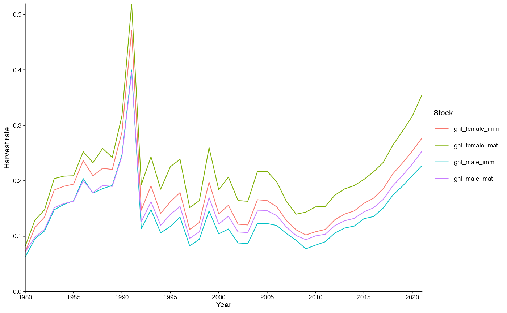
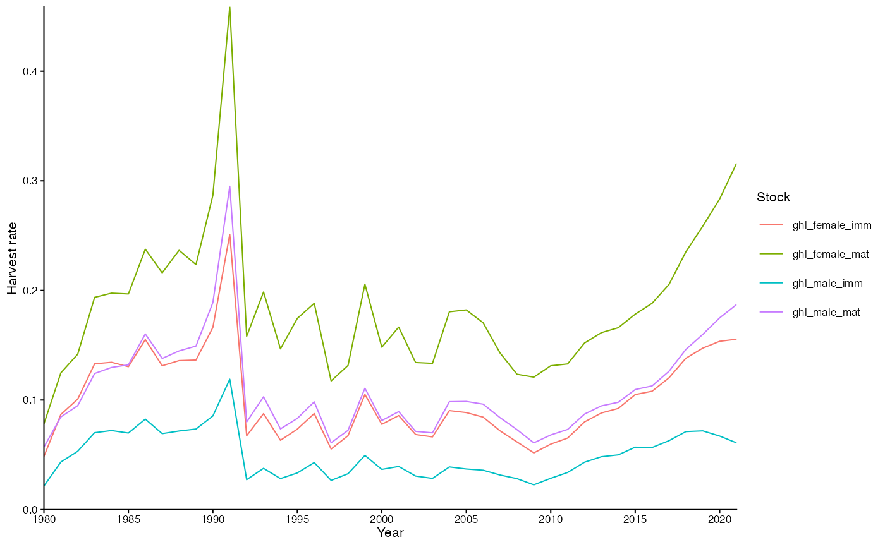
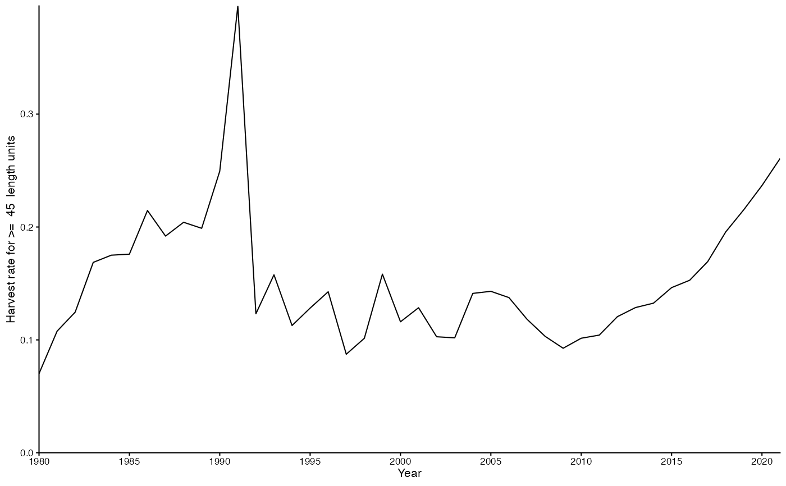

Plot harvest rate
plot_hr.RdPlot harvest rate
Usage
plot_hr(
fit,
stocks = NULL,
min_catch_length = NULL,
biomass = TRUE,
model_selectivity = TRUE,
base_size = 8,
return_data = FALSE
)Arguments
- fit
A gadget fit object. See
g3_fit.- stocks
Character specifying the substock to plot in
fit. IfNULL, all stocks are plotted. Not applicable ifmin_catch_lengthis defined.- min_catch_length
Numeric value defining the minimum catch length (size), which will be used to filter (
>=) the model population before calculating harvest rates using catches. Combines all stocks. Turn of by setting toNULL(default). Set to 0 to get HR for the entire model population. See Details.- biomass
Logical indicating whether biomass should be used to calculate harvest rates instead of abundance.
- model_selectivity
Logical indicating whether to use model selectivity when calculating harvest rates.
FALSEwill calculate harvest rate using the entire population,TRUEusing the harvestable biomass following fleet suitabilities. Only applicable when using thestocksparameter or whenmin_catch_length= 0.- base_size
Base size parameter for ggplot. See ggtheme.
- return_data
Logical indicating whether to return data for the plot instead of the plot itself.
Value
A ggplot object.
Details
The function uses all catches without filtering by size (but allocates them to substocks) and varies denominator depending on the min_catch_length argument. If min_catch_length = NULL, the output represents harvest rate for each substock assuming model fleet selectivities (fetched from the harv.biomass column in fit$res.by.year). If min_catch_length = 0, the output represents harvest rate for the entire model population assuming model fleet selectivities (fetched from the harv.biomass column in fit$res.by.year, stocks are summed before calculating the harvest rate). Finally, if min_catch_length is any number > 0, the output represents harvest rate assuming flat selectivity for lengths >= min_catch_length. Note that the last IS NOT real model harvest rate. It should only be used for reporting results, never for finding target harvest rates in projections, for instance. The min_catch_length = 0 is for the latter case.
Examples
data(fit)
plot_hr(fit)

plot_hr(fit, model_selectivity = FALSE)

plot_hr(fit, min_catch_length = 45)
#> Ignoring unknown labels:
#> • colour : "Stock"
